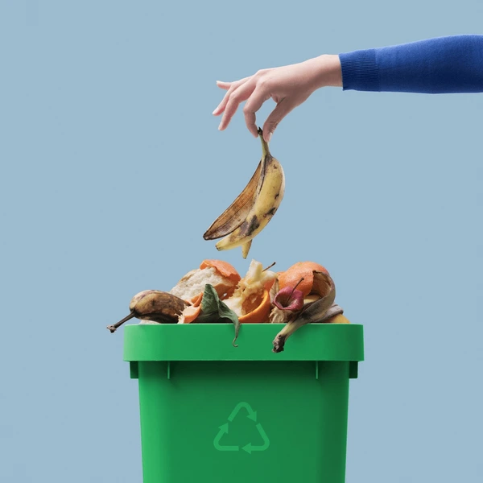

Biodegradable waste consists of organic materials that can decompose naturally by microorganisms such as bacteria and fungi. This process is crucial for reducing waste in landfills and promoting environmental sustainability. This website provides insights into biodegradable waste, its importance, and how we can manage it effectively.

Facts & Figures
Biodegradable waste is a major component of the waste stream, often coming from plant and animal sources. Proper management and composting can transform this waste into valuable resources. Here are some important facts about biodegradable waste:
Biodegradable waste makes up approximately 50% of the total municipal solid waste generated globally.
Common types of biodegradable waste include food scraps, yard trimmings, paper, and wood.
When biodegradable waste is landfilled, it can produce methane—a potent greenhouse gas—if not properly managed.
Composting biodegradable waste can reduce landfill waste, enrich soil, and reduce the need for chemical fertilizers.
Types of Biodegradable Waste
Biodegradable waste can be categorized into several types based on its origin and composition. Understanding these types is essential for proper waste management and composting practices. Here are the main categories of biodegradable waste:
Food Waste: Includes fruit and vegetable peelings, leftovers, eggshells, coffee grounds, and other kitchen scraps. Food waste is one of the largest contributors to the biodegradable waste stream.
Yard Waste: Comprises grass clippings, leaves, branches, and other plant material from gardens and lawns. Yard waste is often composted to create nutrient-rich soil amendments.
Paper Waste: Includes paper products such as newspapers, cardboard, and office paper that are free of inks and coatings. While paper is biodegradable, recycling it is often preferred to conserve resources.
Wood Waste: Composed of untreated wood materials, such as sawdust, wood chips, and fallen branches. Wood waste can be composted or used in biomass energy production.
Human and Animal Waste: Refers to manure, sewage sludge, and other organic waste from humans and animals. This type of waste can be treated and used as fertilizer or for biogas production.
Properly sorting and managing these types of biodegradable waste can significantly reduce environmental impact and promote sustainable waste practices.
Solutions
Managing biodegradable waste effectively is essential for reducing its environmental impact and converting it into useful products. Here are some ways to manage biodegradable waste:
Composting: Home and community composting are effective methods to recycle organic waste into nutrient-rich soil. Composting reduces the amount of waste sent to landfills and lowers greenhouse gas emissions.
Biogas Production: Anaerobic digestion can convert biodegradable waste into biogas, a renewable energy source, and digestate, a nutrient-rich fertilizer.
Reducing Food Waste: Plan meals, store food properly, and use leftovers to minimize the amount of biodegradable waste generated in the first place.
Support Composting Programs: Participate in or advocate for local composting initiatives to ensure that biodegradable waste is managed sustainably.
By adopting these practices, we can significantly reduce the environmental impact of biodegradable waste and contribute to a more sustainable future.